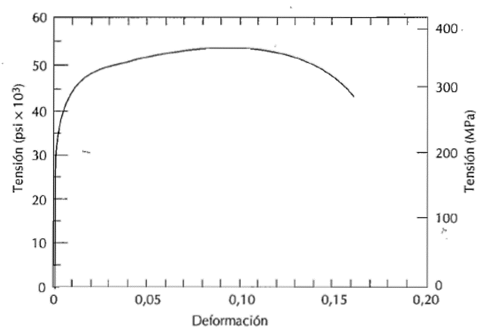
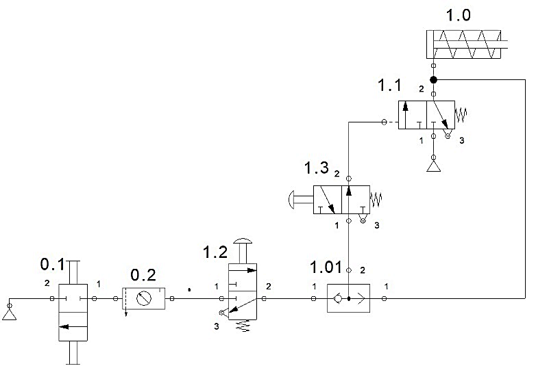
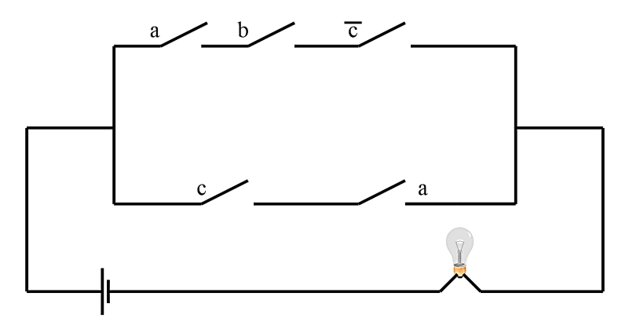

EBAU 2024 · Tecnología e Ingeniería II · Castilla y León · Extraordinaria
El alumno debe escoger cuatro preguntas de las ocho propuestas (90 minutos, cada pregunta 2,5 puntos). Aquí se resuelven todas. Selecciona un bloque o una pregunta en la barra lateral: cada una incluye el enunciado oficial, una introducción con los conceptos que se aplican y la solución paso a paso.
Bloque 1 · Materiales y fabricación
Ensayo de tracción de una barra de aluminio (curva real) y diagrama de fases eutéctico.
Bloque 2 · Sistemas mecánicos
Viga con carga distribuida, motor monocilíndrico de dos tiempos e instalación neumática (FluidSIM).
Bloque 3 · Sistemas eléctricos y electrónicos
Circuito R‖L en paralelo (impedancia, potencias) y función lógica de un circuito de interruptores.
Bloque 4 · Sistemas emergentes y control
IA en seguridad pública, señal de referencia y función de transferencia de un diagrama de bloques.
📄 Enunciado
Cuestión. ¿Qué parámetro del ensayo de tracción indica la ductilidad del material? (0,5 ptos.)
Problema. Una barra de aluminio de 127 mm de longitud con sección cuadrada de 16,5 mm de lado se somete a un ensayo de tracción (figura).
- Determina el alargamiento máximo de la barra. (0,5 ptos.)
- Si se somete a una carga de 6,67·10⁴ N, determina su alargamiento. (0,5 ptos.)
- El alargamiento cuando se alcance la tensión máxima. (0,5 ptos.)
- La tensión necesaria para que el alargamiento sea de 1,27 mm. (0,5 ptos.)

💡 ¿Qué vamos a aplicar?
Sección \(A=16{,}5^2=272{,}25\ \mathrm{mm^2}\). La deformación es \(\varepsilon=\Delta L/L_0\Rightarrow\Delta L=\varepsilon\,L_0\). La tensión \(\sigma=F/A\). En la zona elástica \(\varepsilon=\sigma/E\) (E ≈ 69 GPa, pendiente inicial); en la zona plástica se lee directamente de la curva.
Cuestión · parámetro que indica la ductilidad
El alargamiento a la rotura (deformación máxima, % de elongación) y la estricción (reducción de sección). Cuanto mayores son, más dúctil es el material.
a) Alargamiento máximo
El alargamiento máximo se da en la rotura, cuya deformación (fin de la curva) es \(\varepsilon_{\max}\approx0{,}16\):
b) Alargamiento con F = 6,67·10⁴ N
245 MPa está en la zona elástica (por debajo del límite). Con E ≈ 69 GPa (pendiente inicial): \(\varepsilon=\sigma/E=245/69000=3{,}55\cdot10^{-3}\).
c) Alargamiento a la tensión máxima
La tensión máxima (resistencia a la tracción) se alcanza en el punto más alto de la curva, con deformación \(\varepsilon\approx0{,}10\):
d) Tensión para ΔL = 1,27 mm
ε = 0,01 cae en la zona plástica; leyendo la curva, la tensión correspondiente es \(\sigma\approx300\ \mathrm{MPa}\).
📄 Enunciado
Cuestión. ¿Qué tipos de líneas se pueden encontrar en los diagramas de equilibrio de fases? Explícalas brevemente. (0,5 ptos.)
Problema. Dos elementos A y B totalmente solubles en estado líquido y completamente insolubles en estado sólido, que forman eutéctico (diagrama). (Se admiten valores aproximados.)
- Indica gráficamente las líneas, regiones y puntos significativos. (0,5 ptos.)
- ¿Cómo se llama la aleación [A:B] 40:60 y cuáles son sus características? (0,5 ptos.)
- Una mezcla [A:B] 80:20 se calienta hasta fusión y se enfría lentamente. Analiza las fases a 1250 °C, 1100 °C y 800 °C. (1 pto.)
💡 ¿Qué vamos a aplicar?
Es un diagrama eutéctico con insolubilidad total en sólido: dos ramas de liquidus que bajan hasta el punto eutéctico E y una línea eutéctica horizontal (solidus). Debajo, mezcla de los sólidos puros A + B. Para las proporciones se usa la regla de la palanca.
Cuestión · tipos de líneas
- Liquidus: por encima de ella todo es líquido; marca el inicio de la solidificación.
- Solidus: por debajo todo es sólido; marca el fin de la solidificación (aquí, la línea eutéctica).
- Solvus: límite de solubilidad en estado sólido (no aparece si son insolubles).
- Línea eutéctica: isoterma donde L → A + B simultáneamente.
a) Líneas, regiones y puntos
- Liquidus: las dos rectas que bajan desde Tf(A)=1250 °C y Tf(B)=1125 °C hasta E.
- Punto eutéctico E: 60 % B, 950 °C (mínima temperatura de fusión).
- Línea eutéctica: horizontal a 950 °C.
- Regiones: L (líquido) arriba; L+A a la izquierda de E; L+B a la derecha; A+B (sólidos) debajo de 950 °C.
b) Aleación [A:B] 40:60
Es 60 % B, exactamente la composición del punto E: es la aleación eutéctica. Características: tiene la temperatura de fusión más baja (950 °C), solidifica a temperatura constante (como un metal puro) transformándose el líquido directamente en una mezcla íntima y fina de cristales de A y B.
c) Enfriamiento de [A:B] 80:20 (20 % B)
- 1250 °C: el liquidus a 20 % B está en ≈ 1150 °C; a 1250 °C estamos por encima → todo líquido (L).
- 1100 °C: región L + A (hipoeutéctica: precipita primero el sólido A puro). Regla de la palanca: el liquidus a 1100 °C tiene ≈ 30 % B; sólido A = 0 % B; C0 = 20 % B:$$\%L=\frac{20-0}{30-0}=66{,}7\%\qquad \%A=\frac{30-20}{30-0}=33{,}3\%$$
- 800 °C: por debajo de la eutéctica → sólido A + B. Palanca entre A (0 % B) y B (100 % B), C0 = 20 % B:$$\%B=\frac{20-0}{100-0}=20\%\qquad \%A=80\%$$
📄 Enunciado
Cuestión. Explica qué tiene que cumplir una estructura para estar en equilibrio. (0,5 ptos.)
Problema. De la viga de la figura (carga distribuida W = 1000 N/m sobre 10 m):
- Calcula las reacciones en los apoyos. (0,5 ptos.)
- Calcula los esfuerzos cortantes y momentos flectores. (1 pto.)
- Representa los diagramas de esfuerzos cortantes y momentos flectores. (0,5 ptos.)
💡 ¿Qué vamos a aplicar?
La carga distribuida equivale a una resultante \(R=W\cdot L\) en el centro. El cortante varía linealmente \(V(x)=R_A-W x\) y el momento es una parábola \(M(x)=R_A x-\dfrac{W x^2}{2}\), máximo en el centro.
Cuestión · equilibrio de una estructura
Debe cumplir las condiciones de equilibrio estático: la suma de todas las fuerzas es nula (\(\sum F_x=0\), \(\sum F_y=0\)) y la suma de momentos respecto a cualquier punto es nula (\(\sum M=0\)). Así no hay traslación ni giro.
a) Reacciones
Resultante de la carga: \(R=W\cdot L=1000\cdot10=10000\ \mathrm N\), aplicada en el centro (5 m). Por simetría:
b) Cortantes y momentos
c) Diagramas
📄 Enunciado
Cuestión. Explica las transformaciones termodinámicas isócora e isóbara para un gas. (0,5 ptos.)
Problema. Un motor monocilíndrico de dos tiempos y encendido por chispa tiene cilindrada 101,3 cm³ y volumen de cámara de combustión 12,66 cm³. Da una potencia máxima de 6 kW a 6200 rpm y un par máximo de 10 N·m a 4580 rpm. Con carrera 4,96 cm, calcula:
- La relación de compresión. (0,5 ptos.)
- El diámetro del cilindro. (0,5 ptos.)
- El par a potencia máxima. (0,5 ptos.)
- La potencia a par máximo. (0,5 ptos.)
💡 ¿Qué vamos a aplicar?
Relación de compresión \(r_c=\dfrac{V_u+V_c}{V_c}\). El diámetro sale de \(V_u=\dfrac{\pi D^2}{4}S\). Y la relación par–potencia–velocidad: \(P=M\cdot\omega\) con \(\omega=\dfrac{2\pi n}{60}\).
Cuestión · transformaciones isócora e isóbara
Isócora (volumen constante): no hay trabajo (W = 0); todo el calor cambia la temperatura y la presión. \(Q=n\,c_v\,\Delta T\). En p–V es una recta vertical.
Isóbara (presión constante): el gas se dilata realizando trabajo \(W=p\,\Delta V\); \(Q=n\,c_p\,\Delta T\). En p–V es una recta horizontal.
a) Relación de compresión
b) Diámetro del cilindro
c) Par a potencia máxima (6 kW, 6200 rpm)
d) Potencia a par máximo (10 N·m, 4580 rpm)
📄 Enunciado
Cuestión. Dibuja y explica cómo se comporta una válvula reguladora de caudal unidireccional. ¿Dónde debería colocarse para regular la velocidad de retroceso del vástago en un cilindro de doble efecto? (0,5 ptos.)
Problema. En el circuito montado en el simulador Festo FluidSIM:
- Identifica todos los elementos numerados. (1 pto.)
- Indica la misión de los pulsadores manuales. (0,5 ptos.)
- ¿Qué logra la colocación de la válvula 1.01? (0,5 ptos.)

💡 ¿Qué vamos a aplicar?
La reguladora de caudal unidireccional (estrangulador + antirretorno en paralelo) limita el caudal en un solo sentido. Para regular la velocidad de retroceso se coloca de modo que estrangule el aire que sale de la cámara del vástago (regulación por escape).
Cuestión · válvula reguladora de caudal unidireccional
Consta de un estrangulador regulable en paralelo con un antirretorno: en un sentido el aire pasa libre por el antirretorno; en el otro se ve obligado a atravesar el estrangulador, que limita el caudal y, por tanto, la velocidad del émbolo. Para regular el retroceso de un cilindro de doble efecto se coloca en la línea de la cámara del vástago estrangulando el escape (el aire de esa cámara sale controlado).
a) Elementos numerados
- 0.1 — Válvula de cierre / fuente de aire a presión del circuito.
- 0.2 — Unidad de mantenimiento (filtro + regulador con manómetro + lubricador).
- 1.0 — Cilindro de simple efecto con retorno por muelle.
- 1.1 — Válvula 3/2 accionada por rodillo (final de carrera) con retorno por muelle.
- 1.2 y 1.3 — Válvulas 3/2 de accionamiento manual por pulsador con retorno por muelle.
- 1.01 — Válvula antirretorno (o selectora de circuito) que impide el retroceso del aire por esa línea.
b) Misión de los pulsadores
Son los elementos de mando: al accionarlos dejan pasar aire de pilotaje que ordena el avance del cilindro. Colocados en paralelo (mediante la selectora) permiten el mando desde varios puntos (función OR).
c) Función de la válvula 1.01
Actúa como válvula selectora / antirretorno: combina las señales de los distintos pulsadores dejando pasar la de mayor presión e impide que el aire retorne hacia el pulsador no accionado, evitando fugas de la señal de mando.
📄 Enunciado
Cuestión. Explica, apoyándote en una gráfica, las características principales de la corriente alterna trifásica. (0,5 ptos.)
Problema. En paralelo se conectan una resistencia de 800 Ω y una bobina de 0,2 H, con 230 V eficaces y 50 Hz. Calcula:
- La impedancia del circuito. (0,5 ptos.)
- Las intensidades en todas las ramas. (0,5 ptos.)
- El factor de potencia. (0,5 ptos.)
- El balance de potencias. (0,5 ptos.)
💡 ¿Qué vamos a aplicar?
En paralelo se suman las admitancias: \(Y=\frac1R-\frac{j}{X_L}\), con \(X_L=2\pi f L\). La impedancia es \(Z=1/|Y|\), la intensidad total \(I=V|Y|\) y cada rama \(I=V/Z_{rama}\). Potencias: \(P=V^2/R\), \(Q=V^2/X_L\), \(S=V I\).
Cuestión · corriente alterna trifásica
La corriente alterna trifásica son tres tensiones senoidales de igual amplitud y frecuencia, desfasadas 120° entre sí. En cada instante suman cero (sistema equilibrado). Ventajas: transporte más económico, motores más sencillos y potencia constante. Gráficamente, tres senoides idénticas separadas 120° (T/3).
a) Impedancia
b) Intensidades
c) Factor de potencia
d) Balance de potencias
📄 Enunciado
Cuestión. Define la operación lógica producto mediante su tabla de verdad y su circuito eléctrico. (0,5 ptos.)
Problema. Del circuito de la figura, da la función lógica que vale 1 cuando la bombilla se enciende.
- Número de entradas y de funciones lógicas empleadas. (0,5 ptos.)
- Tabla de verdad. (0,5 ptos.)
- Mapas de Karnaugh necesarios. (0,5 ptos.)
- Simplifica la función obtenida. (0,5 ptos.)

💡 ¿Qué vamos a aplicar?
Interruptores en serie = producto lógico (AND); en paralelo = suma lógica (OR); un contacto normalmente cerrado (c̄) = negación. La bombilla luce si conduce alguna de las dos ramas.
Cuestión · operación producto (AND)
El producto lógico F = A·B vale 1 sólo si todas las entradas valen 1. Su circuito eléctrico son dos interruptores en serie: la lámpara luce únicamente si A y B están cerrados.
| A | B | A·B |
|---|---|---|
| 0 | 0 | 0 |
| 0 | 1 | 0 |
| 1 | 0 | 0 |
| 1 | 1 | 1 |
a) Entradas y funciones
3 entradas (a, b, c) y una única función de salida F. La rama superior (serie) da a·b·c̄ y la inferior a·c; en paralelo se suman:
b) Tabla de verdad
| a | b | c | F |
|---|---|---|---|
| 0 | 0 | 0 | 0 |
| 0 | 0 | 1 | 0 |
| 0 | 1 | 0 | 0 |
| 0 | 1 | 1 | 0 |
| 1 | 0 | 0 | 0 |
| 1 | 0 | 1 | 1 |
| 1 | 1 | 0 | 1 |
| 1 | 1 | 1 | 1 |
c) y d) Karnaugh y simplificación
Los 1 están en a·b·c̄ (110), a·b·c (111) y a·b̄·c (101). Agrupando: (110+111) → a·b y (101+111) → a·c. Por álgebra de Boole, \(b\overline c+c=b+c\), luego:
📄 Enunciado
Cuestiones.
- Explica una aplicación de la IA en el ámbito de la seguridad pública. (0,5 ptos.)
- Explica qué es la señal de referencia en un sistema de control de lazo cerrado. Pon un ejemplo. (0,5 ptos.)
Problema. Calcula la función de transferencia Y(s)/R(s) del sistema de control cuyo diagrama de bloques se muestra en la figura. (1,5 ptos.)
💡 ¿Qué vamos a aplicar?
La rama directa desde la salida de G1 hasta el segundo sumador (en paralelo con G2) aporta el factor (1+G2). En serie con G1 y con realimentación negativa H1 se obtiene la función.
a) IA en seguridad pública
La videovigilancia inteligente: cámaras con visión artificial que reconocen matrículas, detectan comportamientos anómalos o personas en zonas restringidas y avisan automáticamente. También el análisis predictivo para anticipar zonas de mayor riesgo o el reconocimiento facial en controles de acceso.
b) Señal de referencia
La señal de referencia (consigna) es el valor que queremos que alcance la salida del sistema; se compara con la salida realimentada para obtener el error. Ejemplo: en una calefacción, la temperatura que fijamos en el termostato (p. ej. 21 °C) es la referencia; el sistema actúa para que la temperatura real la iguale.
Problema · función de transferencia Y/R
Sea X la salida del primer sumador: \(X=R-H_1\,Y\). Tras G1: \(G_1X\). Ese punto se bifurca: una rama pasa por G2 y otra va directa (unidad) al segundo sumador, que las suma: